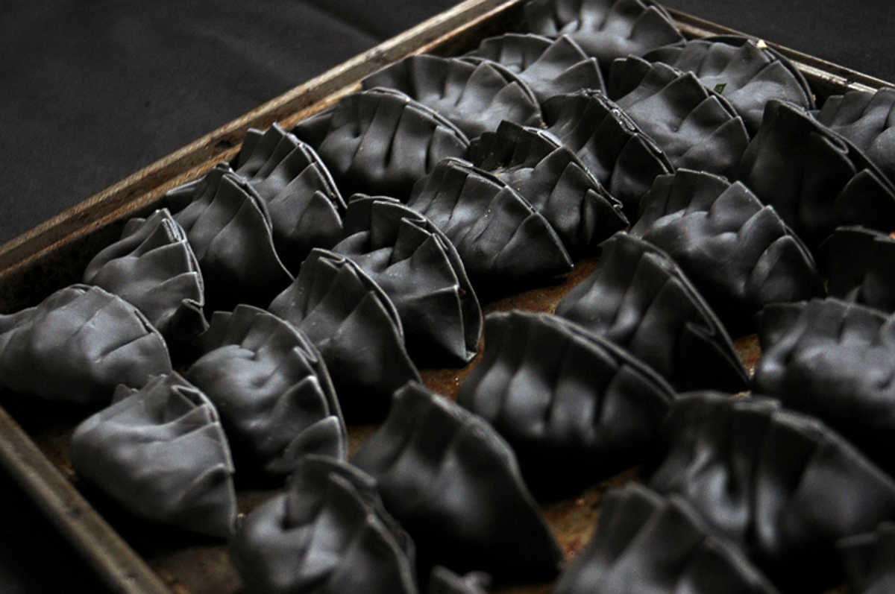
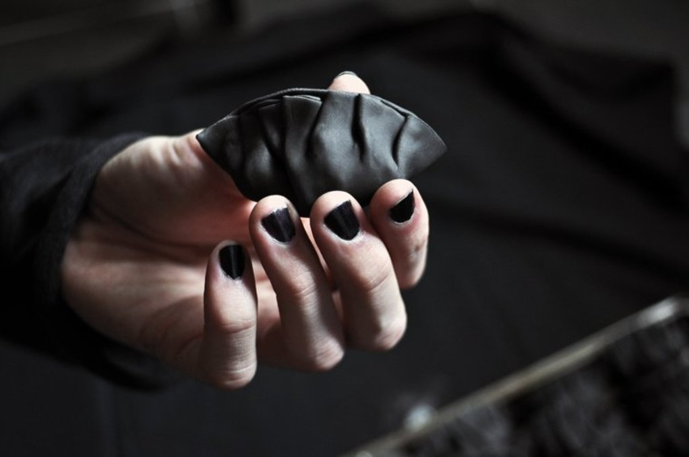

dark gyoza
40 wrappers — 60 minutes
We made homemade gyoza dough with some friends a few weeks back, and it took FOREVER. Devine had the amazing idea of using our pasta maker to do it. We still needed to do a bit of kneading, to get it through the machine the first time. After that, it's easy and sweat-free!
We didn't have any round cookie cutters, the last time we tried I was using upside down glasses. Didn't work well because the rims aren't sharp and smooshes the dough down instead. Again, Devine had a stroke of genius: Cans! I had an empty chickpea pan lying around, it was about the size of a gyoza wrapper so we used that to poke holes through the dough.

I know not everyone has a pasta maker, you don't need one to make wrappers. You can just use a rolling pin.
Gyoza wrapper techniques and ratios were based on the recipe from Just one cookbook. She explains it really well too on her blog it's worth taking a look. I learned a lot from her even if our techniques differ slightly. While I preferred not to knead by hand, or with a rolling pin, i did do it her way the first time.
 all purpose flour 2 cups
all purpose flour 2 cups bamboo charcoal powder 5 ml
bamboo charcoal powder 5 ml sea salt 5 ml
sea salt 5 ml water 1/2 cup
water 1/2 cup cornstarch 15 ml
cornstarch 15 ml
dough
- Mix 2 cups of all purpose flour with 5 ml of bamboo charcoal powder in a bowl.
- Dissolve 1/10 ml of salt in 1/2 cup of just-boiled water, and pour into the flour little by little while mixing.
- Knead the dough on a clean flat surface for a few minutes until it becomes smooth. If your dough is too dry, add 15 ml of hot water and repeat as needed.
- Separate the dough in 3. Roll into balls and wrap them up with a bag or place in a lidded bowl, refrigerate for at least 30 minutes. Leaving it to rest in the refrigerator makes the dough easier to manipulate afterwards.
- Flatten each piece out with a rolling pin into a rough rectangle, thin enough so that you can run it through the pasta maker. Pass it through your pasta maker a few times, incrementing down to the thinnest setting gradually. You can use a rolling pin instead, it works but it takes a lot more effort. Both techniques work, this one just happens to be quicker and easier on your body. Note that depending on your pasta maker, the dough will come out a bit thicker than a traditional gyoza. If you want it thinner you can flatten it a bit more with a rolling pin.
- Put the thin sheet of dough onto a clean flat surface. Take a can (with about a 3" diameter) and start to poke holes into it, these are your gyoza wrappers! You can use cookie cutters if you have some. I used an old chickpea can I had.
- Pile the wrappers, sprinkle some cornstarch (or potato starch) inbetween each piece so they don't stick together. Put a damp towel over your wrappers so they don't dry out. Repeat this process for the other 2 portions of dough, and you can re-use the scraps and make new dough to run through the pasta maker.
 carrots 4
carrots 4 tofu 1/2 block
tofu 1/2 block coriander 2/3 cup
coriander 2/3 cup garlic 4 cloves
garlic 4 cloves ginger root 10 ml
ginger root 10 ml soy sauce 30 ml
soy sauce 30 ml black pepper pinch
black pepper pinch- sea salt 1/10 ml
filling
- Mix the 1/2 block of tofu, the 2/3 cup of coriander, the 4 grated carrots and the 10 ml of ginger root together in a bowl. Add 30 ml of soy sauce as well as black pepper and salt to taste. Mix.
 japanese rice vinegar 45 ml
japanese rice vinegar 45 ml- soy sauce 45 ml
 sesame oil 5 ml
sesame oil 5 ml
dipping sauce
- Combine 45 ml of Japanese rice vinegar with 45 ml of soy sauce and 5 ml of sesame oil.
- sesame oil 5 ml
- water 1/3 cup
pan fry
- Take 1 gyoza wrapper (see recipe), wet all around the edge with water using your fingers. Keep a bowl of water close to dip your fingers in.
- Put a spoonful of filling in the middle.
- Close it. Make little folds with the flap that is facing you using both hands, leaving the back part smooth. Make sure it's sealed tight. Repeat for the rest of the gyoza skins, alternate between fillings. Cover with a damp towel while you work so they don't dry up.
- Put some vegetable oil in a pan on medium heat. Add gyoza in 2 rows of 3 in the pan. Cook until bottom becomes golden.
- Add 1/3 cup of water and put a lid on. Let steam until all the water evaporates.
- Add a bit of sesame oil and cook until crispy.